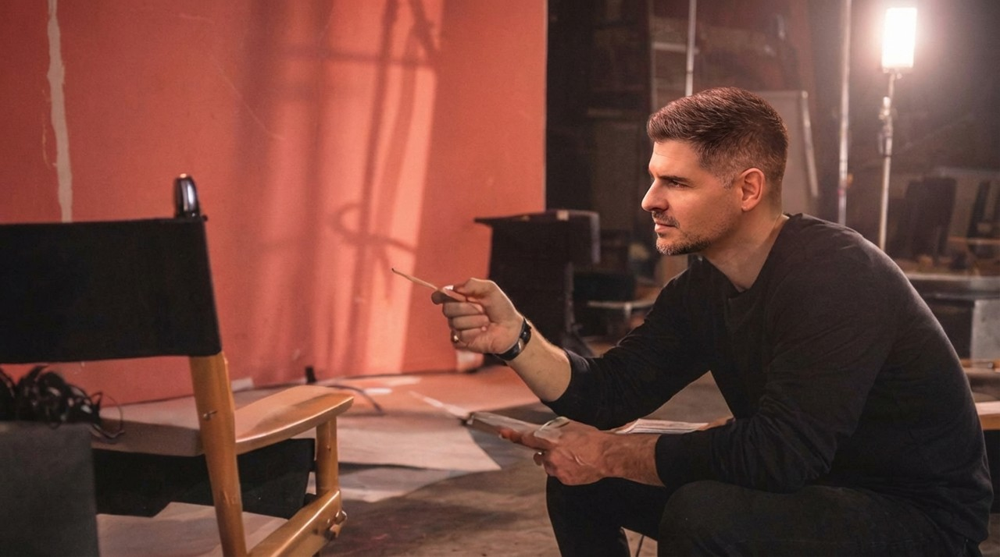

15+ years of impact
I make technology
feel human
Creative strategy. Integrated campaigns. Systems that scale.

Who I Am
I'm Luis Gilberto, a strategist and creative leader with more than 15 years of experience helping technology brands communicate with clarity, purpose, and impact.
I translate complexity into work that connects with real people. From product launches and brand systems to integrated campaigns and creative ecosystems, my focus is simple: make it human, and make it work.
My Approach
I don't believe in overcomplicated things. Good strategy is built on substance:
- Who you're trying to reach
- What they care about
- How your message earns attention
That's how I work, collaborate, and create. Whether I'm designing systems or directing creative, I build with purpose and scale in mind.


Where It Started
I grew up in Venezuela and came to the U.S. with a scholarship. I was determined to explore, build, and turn ideas into something real. In the early part of my career, I learned that clarity and craft often matter more than the idea itself. Those lessons shaped how I show up: as a thinker, builder, and creative lead.
What I Believe


Want to see what that looks like?

Let's create something meaningful
If you're building something complex and want to make it clearer, intentional, and creative, I'd love to talk.
Start the Conversation